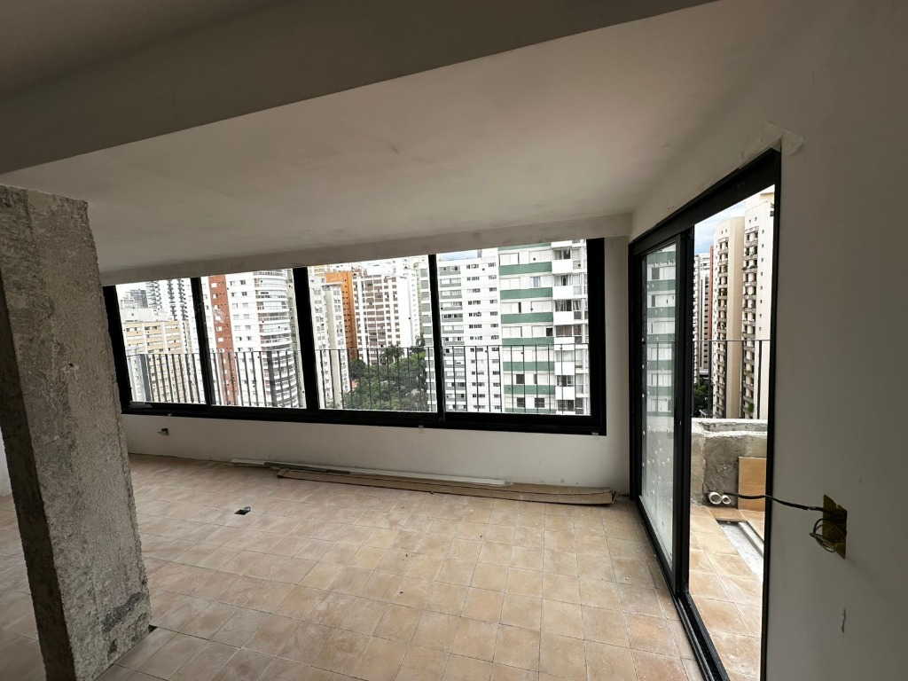
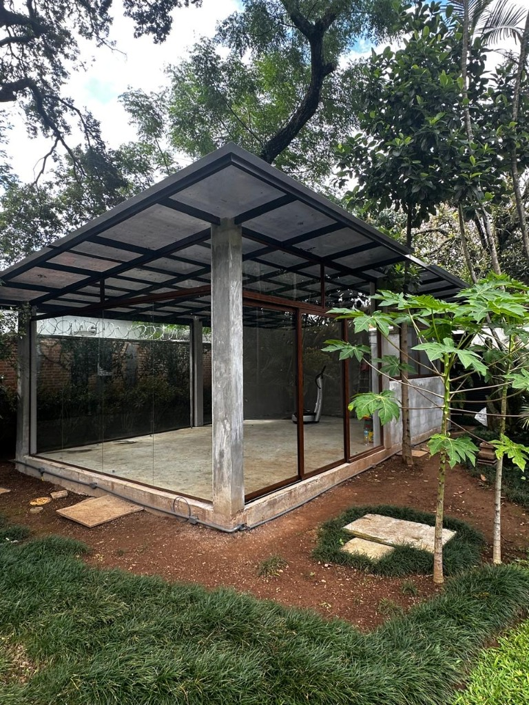

Como Escolher o Vidro Ideal para Sacadas, Varandas e Fachadas Residenciais

Projeto Real ZOE Esquadrias • Fechamento de Sacada com Visão Panorâmica
O envidraçamento de sacadas e áreas gourmet deixou de ser apenas um elemento de proteção climática para se transformar no coração dos projetos residenciais de alto padrão. No entanto, a escolha errada do tipo de vidro ou da espessura pode comprometer não apenas a durabilidade do sistema, mas a integridade física dos moradores.
1. Vidro Temperado vs. Vidro Laminado: Qual a Diferença Real?
A dúvida mais frequente entre arquitetos e clientes reside na especificação entre esses dois vidros de segurança:
Vidro Temperado
Passa por tratamento térmico que eleva sua resistência mecânica em até 5 vezes em comparação ao vidro comum. Em caso de quebra, fragmenta-se em pequenos pedaços não cortantes. Ideal para divisórias internas, portas de correr e boxes.
Vidro Laminado (Recomendado para Sacadas)
Composto por duas ou mais lâminas de vidro unidas por uma película de PVB (Polivinil Butiral). Em caso de impacto ou ruptura, os fragmentos permanecem totalmente presos à película, impedindo quedas e mantendo o vão fechado até a substituição.
2. O que dita a Norma ABNT NBR 16259?
A norma técnica brasileira ABNT NBR 16259 estabelece os requisitos mínimos de desempenho para sistemas de envidraçamento de sacadas. Ela avalia a resistência à pressão do vento conforme a região do país e a altura do pavimento.
Para andares mais altos, onde a força eólica é extrema, a especificação correta de espessura (geralmente entre 8mm e 10mm) combinada com perfis de alumínio estruturados é indispensável para evitar vibrações excessivas e infiltrações de chuva.

Integração visual e fechamento seguro em ambientes residenciais
3. Isolamento Acústico e Conforto Térmico
Para clientes que buscam silêncio e estabilidade térmica em centros urbanos, a combinação de vidros laminados acústicos com esquadrias de perfil duplo garante uma atenuação de até 35 a 42 decibéis, bloqueando ruídos de tráfego intenso e garantindo uma experiência de tranquilidade absoluta.
Compromisso ZOE Esquadrias
Todos os nossos projetos utilizam vidros certificados com rastreabilidade e ferragens em aço inoxidável ou alumínio de alta liga. Oferecemos consultoria completa desde a medição a laser até a instalação final.